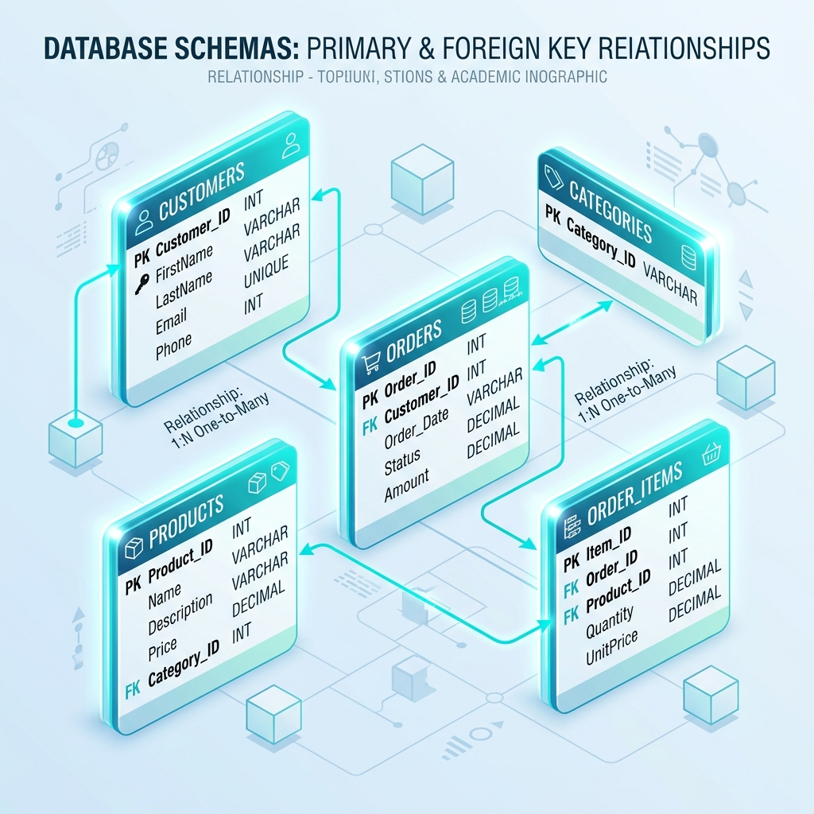

🚀 שומרי הנתונים: המסע מתחיל! 🎮
היי אלופי הנתונים לעתיד! 🌟 מוכנים להרפתקה מטורפת במיוחד? במשחק הלימודי והסופר-צבעוני הזה נלמד יחד איך להפוך למאסטרים אמיתיים ב**בינה מלאכותית (AI) 🤖** וב**אנליזה ב-Tableau 📊**! נעצב טבלאות, ניצור נתונים \"בעלי היגיון בריא\", ונפיק דאשבורדים אמיתיים להנהלה הבכירה! 👑
🧙♂️ בחר/י את אוואטר הדאטה שלך! 🔮
לכל דמות יש כוחות-על ייחודיים בעולם האנליטיקה! בחר/י את הגיבור/ה שלך:
📢 תדרוך המשימה ההייטקי! 🤖
🚨 קשב רב, סיינטסיט/ית נתונים צעיר/ה! הנה מפת הדרכים להצלחה:
• 📊 **שלב 1 (סכמת הנתונים)**: נבין את מבנה הטבלאות הריקות ונגלה סוד מדהים – איך **מיזוג (JOIN) לטבלה שטוחה אחת** פותר את כל בעיות החיבור ב-Tableau!
• 🧹 **שלב 2 (נאותות הנתונים)**: נבצע "מבחן היגיון בריא" ונרפא נתונים שבורים, שליליים ומקוטעים שנוצרו בטעות.
• ✍️ **שלב 3 (מחשפת הפרומפטים)**: נכתוב פרומפט מנצח שמאלץ את ה-AI לייצר לנו קובץ CSV אמיתי ומושלם להורדה, תוך הימנעות ממסיחים שבורים!
• 🔗 **שלב 4 (זירת הפלטפורמות)**: נכיר את הכלים המובילים ונעבור חידון הבנה קצר על חיבור קובצי אקסל ו-CSV.
• 📈 **שלב 5 (בניית תרשימים)**: נגרור מימדים כחולים ומדדים ירוקים כדי לבנות 5 תרשימים עוצמתיים ומדויקים!
• 👑 **שלב 6 (מבנה דאשבורדים)**: נמיין את התרשימים לדאשבורדים תפעוליים, טקטיים ואסטרטגיים, ונוציא תעודת Master רשמית!
שלב 1: הבסיס לכל פרויקט - הגדרת סכמת הנתונים (Database Schema) 📁
פרס: +150 XP 🎉למה שלב זה הכרחי לפרויקט שלכם? הסבר אקדמי מורחב 🎓
לפני שרצים לייצר נתונים בבינה מלאכותית, חובה לתכנן את ארכיטקטורת המידע – ה-**Schema** של בסיס הנתונים.
הגדרת סכמה היא למעשה תכנון של תבניות הטבלאות הריקות והגדרת סוגי העמודות.
💡 **הסבר זהב מעשי - טבלה מלאה ושטוחה אחת (JOIN)!**
בעולם הנתונים והאקדמיה, נהוג לתכנן טבלאות נפרדות למניעת כפילויות (מוצרים לחוד, סניפים לחוד, מכירות לחוד).
אבל, כשמגיעים לעבודה מעשית ב-**Tableau Public**, הטיפ המנצח והקל ביותר הוא לבצע **JOIN (מיזוג)** של טבלאות האם לתוך טבלת המכירות כדי ליצור **טבלה מלאה ושטוחה אחת!**
עבודה עם טבלה שטוחה אחת מרכזת את כל המימדים והמדדים במקום אחד, מונעת שגיאות קישור מורכבות ומאפשרת לייצר גרפים במהירות הבזק! ⚡
אבל כדי לעשות זאת נכון ב-AI, עלינו להבין בדיוק אילו שדות מקשרים ביניהן.

סכמת הטבלאות הריקות של פרויקט הקורס שלך:
אתגר קשרי הישויות: שייך/י את המפתחות הזרים לטבלת המכירות
גרור/י את שדות המפתח הזרים (FK) או לחץ/י על התא המתאים בטבלת המכירות כדי להשלים את הסכמה העסקית!
שלב 2: נאותות הנתונים ומבחן ההיגיון הבריא (Data Integrity)
פרס: +150 XPהמשמעות העסקית: למה "היגיון בריא" בדאטה קובע החלטות ניהוליות?
נאותות נתונים (Data Integrity) היא התשתית לקבלת החלטות. אם בינה מלאכותית מפיקה נתוני מכירות שאין בהם "היגיון בריא" (למשל, תאריכי רכישה משנת 2035, מחיר עלות שלילי של מוצרים, או מזהי מפתחות זרים שלא קיימים בטבלאות האם) - מנהלי הארגון יסיקו מסקנות מוטעות ויפסידו כסף! עליך לנתח את טבלת המכירות שהתקבלה מה-AI ולסנן את **השורות המשובשות המפרות את נאותות המערכת**.
תצוגה מקדימה: פלט ה-AI המשובש (לחץ על השורות הלא הגיוניות)
| עסקה | תאריך | סניף | מוצר | כמות | סה״כ (ש"ח) | לקוח | רווח (ש"ח) |
|---|
יעד: טבלת מכירות בעלת "היגיון בריא" ونאותות דאטה
| עסקה | תאריך | סניף | מוצר | כמות | סה״כ (ש"ח) | לקוח | רווח (ש"ח) |
|---|
שלב 3: מחשפת הפרומפטים - נוסחת הנתונים המושלמת ✍️✨
פרס: +200 XP 🏆כיצד ננחה את ה-AI לייצר קובץ CSV אמיתי ולא רק טקסט סתמי? 🤖
כדי לייצר נתוני פרויקט איכותיים, לא מספיק לבקש מה-AI "תכתוב לי כמה שורות".
פרומפט מנצח ומקצועי חייב להגדיר במפורש את **תפקיד ה-AI**, **הקשר הפרויקט והצורך בטבלה שטוחה אחת**, **סכמה מדוייקת של עמודות**, וכן **חוקי היגיון בריא** נוקשים למחירים, כמויות ותאריכים ריאליים.
🔥 **דגש קריטי: הנחיית AI להפקת קובץ פיזי!**
בפרומפט שלנו, נדרוש מה-AI במפורש לפלוט את הנתונים בתוך **תיבת קוד (Code Block) ייעודית בפורמט CSV נקי**, ללא הסברים מיותרים באמצע וללא שימוש בשלוש נקודות (...).
הדבר מאפשר לנו להעתיק את הקוד בקליק, לשמור אותו כקובץ פיזי בעל סיומת `.csv`, או להוריד אותו ישירות דרך מנגנון ה-Artifacts של Claude ו-Advanced Data Analysis של ChatGPT! 💾
רכיבי הפרומפט שלך:
הפרומפט המתגבש לבינה המלאכותית:
פלט ה-CSV נוצר בהצלחה בתוך תיבת קוד נקייה! 💾
ה-AI יצר קובץ מושלם המרכז את כל נתוני המכירות, הסניפים והמוצרים לטבלה שטוחה ומלאה אחת!
שלב 3.5: הפסקת ריכוז - פק-מן אקדמי 🎮👾
פרס: +150 XP 🏆מדוע שילבנו פק-מן באמצע הקורס? 🎓💡
מחקרים קוגניטיביים מראים כי הפסקות ריכוז קצרות ופעילות (Active Breaks) משפרות משמעותית את הטמעת החומר הלימודי ומחדשות את זרימת הדם למוח!
לאחר שעבדנו קשה על סכמת הנתונים, טיהור הדאטה והנדסת פרומפטים מורכבת - הגיע הזמן להפוגה משעשעת.
⚠️ חוקי האתגר המותאמים:
עליך להוביל את פק-מן הסטודנט לאכול את כל פירורי הידע (הנקודות הצהובות) במבוך, תוך בריחה מהמרצה הקשוח ד"ר רמי רשקוביץ (הרוח האדומה עם המשקפיים).
אם ד"ר רמי יתפוס אותך, תאבד חיים ותיאלץ להתחיל מחדש!
💡 לא מצליח לעבור? אל דאגה! יש ברשותך גלגל הצלה 🛟 שיפתור את השלב בשבילך!
DR. RAMI CHASE 👨🏫
Eat all dots and run away from Rami!
לחץ על הכפתור כדי להתחיל לברוח מהמרצה!
המרצה תפס אותך! 👨🏫 'חזור ללמוד!'
ניצחת! ברחת מרמי בהצלחה וצברת +150 XP!
שלב 4: זירת הפלטפורמות וחיבור הנתונים ל-Tableau 🔗🤖
פרס: +200 XP 🏆בחירת הכלי הנכון לייצור הנתונים 🛠️
עכשיו, כשיצרנו את הפרומפט המנצח, הגיע הזמן להכיר את פלטפורמות ה-AI השונות שבהן נוכל להשתמש לייצור הנתונים. לכל כלי יש יתרונות ייחודיים שחייבים להכיר לטובת משימות ניתוח נתונים מורכבות:
- Artifacts מאפשר לראות את קובצי ה-CSV שנוצרו בצורה ויזואלית ומסודרת בחלון צידי.
- מושלם להבנת מפתחות זרים ויחסי יחיד-לרבים בטבלאות.
- תמיכה מעולה בעברית נאותה ללא תקלות קידוד בייצוא.
- Advanced Data Analysis משתמש במנוע פייתון פנימי לייצור קבצי אקסל ו-CSV ללא קיטועים.
- מסוגל לייצר 5,000+ שורות מורכבות על ידי הרצת סקריפט והורדתו כקובץ XLS.
- אפשרות לבניית **Custom GPT** ייעודי המאומן על סכמת הנתונים שלכם.
- מצוין לפלט מהיר של בלוקי קוד Markdown CSV מופרדים בפסיקים להעתקה מיידית.
- עלויות חינמיות ומהירות ריצה גבוהה במיוחד.
- Deepseek R1 מריץ שרשרת חשיבה (CoT) מורכבת לאימות הנתונים מראש.
💡 סוד מקצועי: עבודה עם 3 קבצי CSV ומיזוגם באמצעות AI לטבלה שטוחה אחת!
בפרויקטים אקדמיים ומסחריים, מומלץ לייצר שלושה קבצי נתונים נפרדים (3 CSVs) דרך הבינה המלאכותית:
1. 📊 טבלת המכירות הראשיות (Transactions)
2. 📁 טבלת מפתחות המוצרים (Products)
3. 🏢 טבלת מפתחות הסניפים (Branches)
במקום להתאמץ ולנסות לחבר ביניהן ידנית בתוך Tableau Public, ישנו קיצור דרך גאוני ומקצועי:
פשוט טענו (Upload) את שלושת הקבצים שנוצרו לתוך מנוע ה-AI (כמו ChatGPT Advanced Data Analysis או Claude), וכתבו לו פרומפט מיזוג פשוט:
ה-AI יפעיל מנוע פייתון פנימי, יבצע את ה-JOIN במקומכם ויפלוט לכם קובץ CSV שטוח ומלא אחד המרכז את כל המידע! טעינת טבלה שטוחה אחת (Single Flat Table) ל-Tableau Public הופכת את בניית התרשימים והדאשבורדים לקלה, מהירה ונטולת שגיאות מפתח זר לחלוטין! 🚀✨
מדריך אקדמי מעמיק: איך מתחילים ומחברים נתונים ב-Tableau Public 🔗📊
כעת, כשיש לכם את קובץ ה-CSV הפיזי שהורדתם בשלב הקודם (`sales_data.csv`), הגיע הזמן לעבור לכלי האנליטיקה המוביל בעולם - **Tableau Public**! הורדת התוכנה היא חינמית לחלוטין. פשוט כנסו לאתר הרשמי, הירשמו, והורידו את הגרסה העדכנית למחשב שלכם. לאחר שתפתחו את התוכנה, תראו ממשק נקי ומזמין.
⚡ סימולטור חיבורי נתונים ב-Tableau Public (מונפש ומעוצב)
בחירת מקור החיבור 📂
פתחו את Tableau Public במחשב. בתפריט **Connect** הצידי (שצבוע בכחול): בחרו ב-**Text file** אם קובץ הנתונים הוא CSV (כמו שהורדנו), או ב-**Microsoft Excel** במידה והמרתם אותו לאקסל. העלו את הקובץ.
טעינת מקורות נוספים ➕
אם תרצו לחבר טבלאות נפרדות, לחצו על **Add** ליד מקור הנתונים וטענו את שאר הקבצים (טבלת מוצרים וטבלת סניפים) כך שכולם יופיעו במסך ה-Data Source.
יצירת ה-JOIN והמפה הלוגית 🔗
גררו את טבלת המכירות למרכז. כעת גררו את טבלת המוצרים וחברו ביניהן. Tableau יבקש מכם להגדיר את השדות המשותפים: בחרו ב-**מוצר_מזהה** בשני הצדדים. עשו דבר דומה עבור סניפים עם **סניף_מזהה** ותקבלו מפה לוגית מושלמת!
הסבר אקדמי: מה ההבדל בין גיליון (Worksheet) לדאשבורד (Dashboard)?
• **גיליון עבודה (Worksheet)**: סביבה המיועדת לבניית תרשים בודד וסינגולרי (למשל, רק תרשים עמודות או רק מפה). בגיליון אנו מגררים מימדים ומדדים כדי ליצור את הויזואליזציה.
• **דאשבורד (Dashboard)**: לוח מחוונים המאחד מספר גיליונות עבודה שונים במקום אחד. מטרתו היא ליצור סיפור ויזואלי שלם (Visual Storytelling). דאשבורד מאפשר למנהלים לראות הצלבות של נתונים, וכולל מסננים אינטראקטיביים (Dashboard Action Filters) שבהם לחיצה על עיר במפה מסננת מיד את שאר הגרפים בדאשבורד!
💾 איך שומרים ומגישים את העבודה לבודק הקורס?
1. בתפריט העליון לחצו על **File** -> **Save to Tableau Public As...**
2. התחברו עם המשתמש האקדמי שלכם ותנו שם פרויקט משמעותי.
3. לאחר שהדאשבורד פורסם בדפדפן, לחצו על כפתור **Share** (סמל המשולש הקטן בפינה הימנית התחתונה).
4. העתיקו את הכתובת תחת שדה **Link** – זהו הקישור הרשמי והיחיד שאתם צריכים להגיש בפורטל הקורס לבודק המטלות שלכם!
אתגר הטקטיקה: הוכח/י הבנה בחיבור והפקת נתונים
שלב 5: בניית התרשימים ב-Tableau (Tableau Sheet Builder)
פרס: +250 XPהבנת המימדים והמדדים בויזואליזציה
ב-Tableau אנו מחלקים את עמודות הנתונים לשני סוגים מרכזיים:
🔹 **מימדים (Dimensions)**: נתונים איכותיים, קטגוריאליים או תאריכים המשמשים לחלוקה ולסינון של הגרף (למשל: קטגוריית מוצר, תאריך רכישה, עיר, סוג לקוח). מופיעים בדרך כלל בצבע כחול.
🔸 **מדדים (Measures)**: נתונים כמותיים-מתמטיים שניתן לבצע עליהם פעולות חישוב כמו סכימה, ממוצע או ספירה (למשל: סה"כ מכירות, כמות, רווח עסקה). מופיעים בצבע ירוק.
עליך לגרור את המימדים והמדדים הנכונים אל מדפי העמודות (Columns) והשורות (Rows) בסימולטור כדי לייצר 5 תרשימים עסקיים מנצחים!
הגדרת המשימה וההקשר העסקי:
גרור עמודות ומדדים למעלה כדי להתחיל להרכיב את התרשים הנוכחי ב-Tableau.
תרשים Tableau
שלב 6: בניית הדאשבורדים וסיווג הדרגים (Dashboard Layout & Hierarchy)
פרס: תעודת מוסמך Masterסוגי דאשבורדים בארגון מבוסס נתונים
מנהלים בדרגים שונים בארגון זקוקים למידע שונה לחלוטין לקבלת החלטות. אנו מסווגים דאשבורדים לשלושה סוגים מרכזיים:
⚙️ **דאשבורד תפעולי (Operational)**: מיועד לדרג העבודה בשטח ומנהלי סניפים. עוסק בנתונים תכופים ופרטניים המצריכים תגובה מיידית (למשל: כמות פריטים במלאי בכל יום, עמידה ביעדי משמרת).
📊 **דאשבורד ניהולי/טקטי (Tactical/Management)**: מיועד למנהלי מחלקות ואנליסטים. מנתח מגמות, השוואות וביצועים של חודש או רבעון (למשל: סה"כ מכירות לפי קטגוריות מוצר שונות והשוואה ביניהן).
👑 **דאשבורד אסטרטגי (Strategic)**: מיועד להנהלה הבכירה (מנכ"ל, סמנכ"לים). מציג תמונת על שנתית, יציבות פיננסית, התרחבות ומדדי KPI גלובליים ארוכי טווח (למשל: מפת פריסה ארצית וביצועים רוחביים של סניפים).
משימת הגיימיפיקציה הסופית: גרור/י את חמשת התרשימים שבנית בשלב הקודם אל הדאשבורד הנכון ביותר עבורם! (ניתן לשים יותר מתרשים אחד בדאשבורד)
התרשימים שבנית:
תעודת גמר אקדמית: מאסטר בנתונים וב-Tableau
שומרי הנתונים - בינה מלאכותית & TABLEAU PUBLIC
תעודה זו מוענקת בזאת בהצטיינות יתרה לסטודנט/ית:
ישראל ישראלי
על השלמה מלאה ופתרון מושלם של כל שלבי ההכשרה המתקדמים בסימולטור **שומרי הנתונים**. בעל/ת יכולת אקדמית מוכחת להגדרת סכמות טבלאות מורכבות, הבטחת נאותות ושלמות נתונים סינתטיים דרך הנדסת פרומפטים מונחי "היגיון בריא" בבינה מלאכותית, חיבורם המקצועי ל-Tableau Public ופילוחם לדאשבורדים תפעוליים, טקטיים ואסטרטגיים.
משימה אקדמית אחרונה: הגשת המטלה 👨🏫
נא לצלם מסך (Screenshot) של תעודה זו הכוללת את שמך וניקוד ה-XP שלך, ולהעלות את הצילום ישירות בפורטל הסטודנטים האוניברסיטאי כהוכחה לביצוע מושלם של משימת ההכשרה!